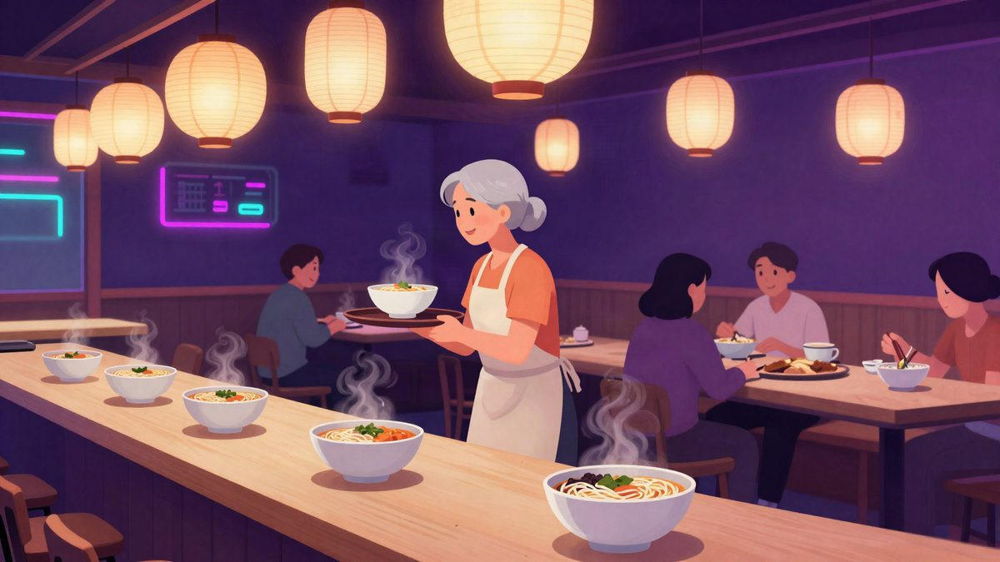

U Matsuyami je otvoren popup restoran s konobaricama koje imaju demenciju

U japanskoj Matsuyami 21. rujna održan je novi termin pop-up projekta Restaurant of Mistaken Orders, u kojem su u restoranu Tenryu Ramen narudžbe poslužile četiri starije osobe s demencijom, u dobi od 78 do 88 godina. Organizatori kažu da im zarada nije cilj, nego veće razumijevanje za ljude koji žive s demencijom i poruka da demencija ne znači kraj društvenih kontakata.
U japanskoj Matsuyami 21. rujna održan je novi termin projekta Restaurant of Mistaken Orders, popup restorana koji goste unaprijed upozorava da bi narudžbe mogle biti pogrešno zapamćene ili poslužene. Ovoga puta restoran je surađivao s ramen restoranom Tenryu Ramen, a u servisu su radile četiri lokalne starije osobe s demencijom, u dobi od 78 do 88 godina.
Projekt postoji od 2018. i nema stalni prostor. Svaki put se veže uz postojeći restoran koji za taj dan ustupi prostor. U Matsuyami je događaj održan na japanski praznik Respect for the Aged Day, koji je pao na Svjetski dan Alzheimerove bolesti.
Organizatori kažu da ideja nije „zaposliti starije osobe s demencijom”, nego potaknuti razumijevanje za ljude koji žive s tim stanjem. Sudionicima žele dati osjećaj samopouzdanja i postignuća, uz poruku da demencija ne znači kraj društvenih kontakata.
Među gostima su bile kći i unuka jedne od sudionica. Kći je prema izvještaju brisala suze dok je govorila koliko ju je dirnulo što majku vidi aktivnu. Jedan gost rekao je da bi se ljudi bolje razumjeli kad bi razgovarali polako, pažljivo slušali i bili strpljivi.
Jedna od konobarica na kraju je rekla da joj je bilo jako drago što je vidjela toliko ljudi i razgovarala s njima. Zarada nije u prvom planu, a oni koji ne mogu doći na obrok, ali žele pomoći, mogu donirati online.
Izvor: SoraNews24
Povezani članci
 Ukrajinska policija razbila mrežu lažnih call centara: 135 Nijemaca prevareno za više od 4,3 milijuna eura9. studenoga 2026.
Ukrajinska policija razbila mrežu lažnih call centara: 135 Nijemaca prevareno za više od 4,3 milijuna eura9. studenoga 2026. Sudac u SAD-u je odobrio skupnu tužbu protiv Mete zbog praćenja zdravstvenih podataka pacijenata5. studenoga 2026.
Sudac u SAD-u je odobrio skupnu tužbu protiv Mete zbog praćenja zdravstvenih podataka pacijenata5. studenoga 2026. Hakeri preko zlonamjernih Instagram oglasa zaražavaju iPhoneove spywareom bez ijednog klika1. studenoga 2026.
Hakeri preko zlonamjernih Instagram oglasa zaražavaju iPhoneove spywareom bez ijednog klika1. studenoga 2026.